사진 5장
사진 5장
2026-10-17 · 안흥 스페이스호
조황정보 HOME / 조황정보 / 조황상세
10월 16일 흑도권 사이즈굿 갑오징어 조황 입니다 사릿물에 강제휴식을 하면서 출조를 위해 열심히 일하고 출항을 했습니다.너울이 찾아주신 조사님들을 괴롭혔지만 오늘 출조하신 조사님들을 열정에 GG를 쳤습니다.스페이스호 내년 쭈갑 예약 오픈일은 2월2일
가을 선상낚시의 핵심 어종인 갑오징어·주꾸미·문어를 중심으로 조황, 지역별 선박, 장비 선택 정보를 정리합니다.
사진 5장
10월 16일 흑도권 사이즈굿 갑오징어 조황 입니다 사릿물에 강제휴식을 하면서 출조를 위해 열심히 일하고 출항을 했습니다.너울이 찾아주신 조사님들을 괴롭혔지만 오늘 출조하신 조사님들을 열정에 GG를 쳤습니다.스페이스호 내년 쭈갑 예약 오픈일은 2월2일
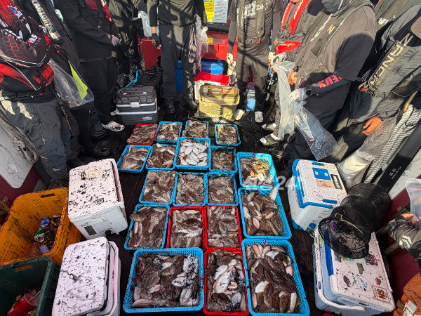
사진 2장10월10일 사릿물때 좋은 마릿수 조황입니다 사릿물때 평균 마릿수가 좋은 하루였습니다.사릿물때 밑고 예약해해주세요*** 안흥 스페이스호 예약 안내 ***예약문의 : 010-3452-2718오시는길 : 충남 태안군 근흥면 안흥1길 32홈페이지 : htt
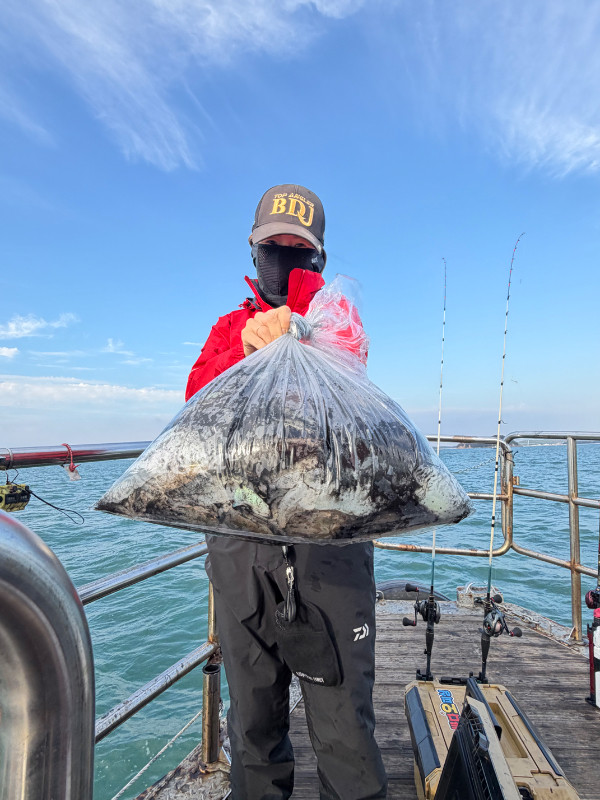
사진 7장10월9일 갑오징어 초대박 조황 입니다 사릿물때 평균 마릿수가 좋은 하루였습니다.*** 안흥 스페이스호 예약 안내 ***예약문의 : 010-3452-2718오시는길 : 충남 태안군 근흥면 안흥1길 32홈페이지 : https://spaceho.sunsa
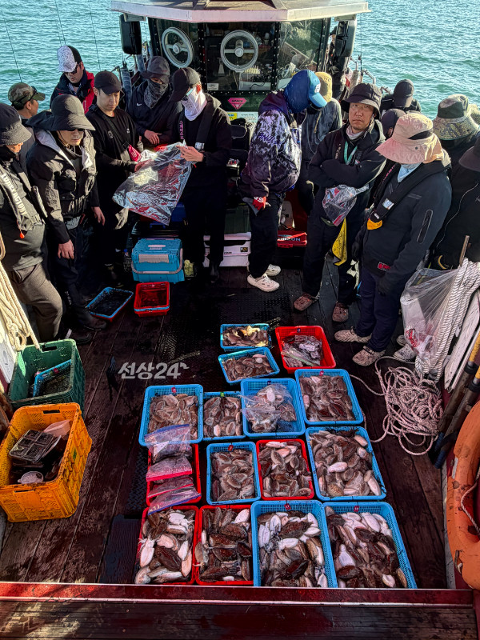
사진 3장10월8일 스페이스호 갑오징어 조황 입니다 사이즈 좋은 갑오징어가 낮은수심에서 잘나옵니다..*** 안흥 스페이스호 예약 안내 ***예약문의 : 010-3452-2718오시는길 : 충남 태안군 근흥면 안흥1길 32홈페이지 : https://spaceho
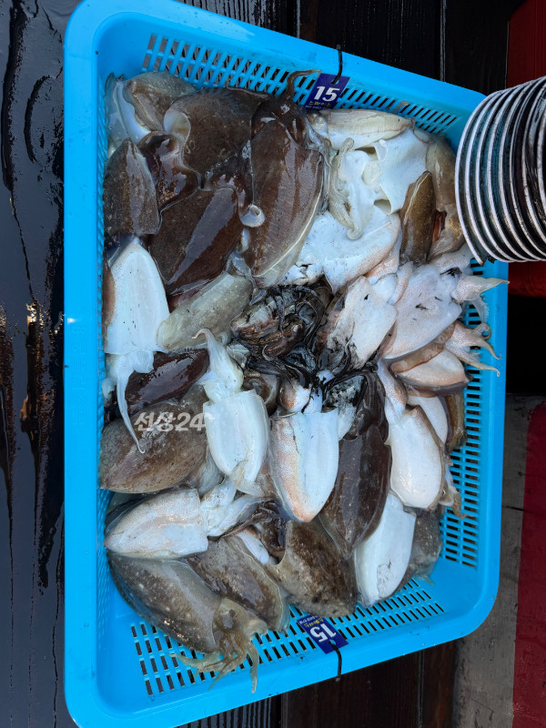
사진 3장10월 7일 스페이스호 거짓말 이라고 해도 믿을 만큼 대박조황 거짓 같지만 진짜 조황 입니다.바구니 한개가 부족해서 두개 쓰신 조사님들이 많았습니다.*** 안흥 스페이스호 예약 안내 ***예약문의 : 010-3452-2718오시는길 : 충남 태안군 근
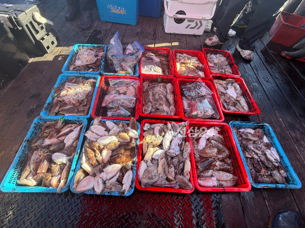
사진 3장10월6일스페이스호 갑오징어 조황 안흥 신진도권 잘나옵니다 스페이스호 썬캡 믿고 예약해주세요*** 안흥 스페이스호 예약 안내 ***예약문의 : 010-3452-2718오시는길 : 충남 태안군 근흥면 안흥1길 32홈페이지 : https://spaceho
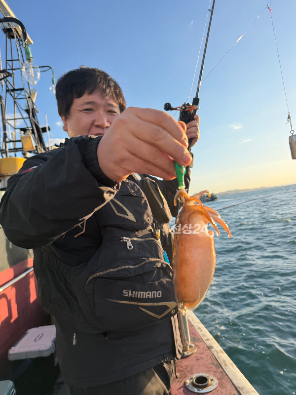
사진 11장10월2일 안흥항 스페이스호 안흥 신진도권 갑오징어 조황 입니다. 안녕하세요 스페이스호 입니다.오늘은 첫포인트로 안흥 신진도권을 잡고 출항을 하였습니다.사이즈 좋은 안흥 신진도권 갑오징어들이 줄줄이 나오는 관경을 여러번 목격을 하였습니다.사이즈 좋은
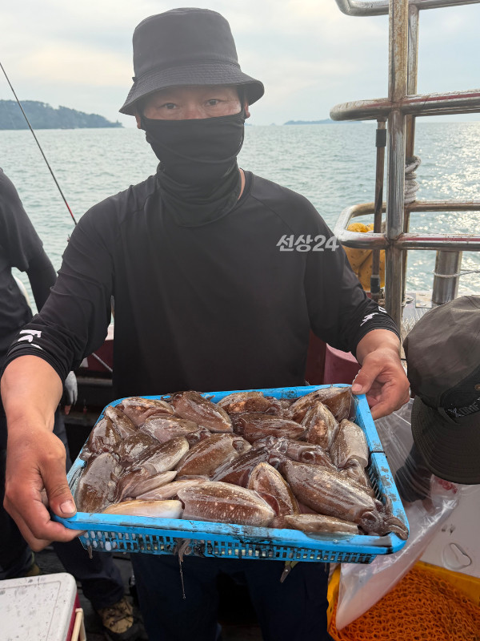
사진 9장스페이스호 9월27일 싸이즈굿 하루에 세번 찾아온 피딩타임 굿 조황입니다 안흥 신진도권 협업선인 여명호, 라온호, 가가호, 스페이스호가 태안권 여기저기 돌아다니면서 만들어낸 요즘 시즌 보기힘든 사이즈로 굿조황 및 피딩타임 9연타 10연타를 하는 느나느
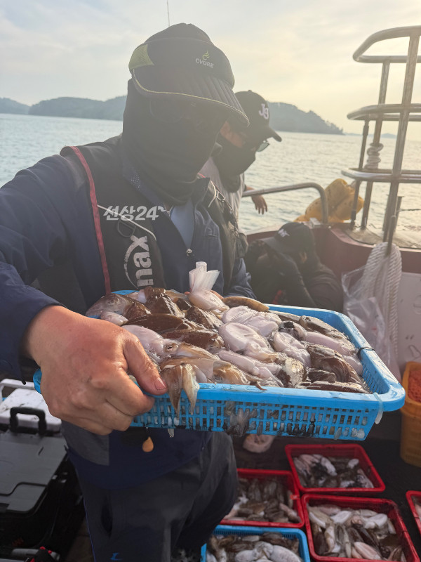
사진 9장9월26일 스페이스호 갑오징어 조황입니다 안흥 신진도권 갑오징어가 사막을 열었습니다 *** 안흥 스페이스호 예약 안내 ***예약문의 : 010-3452-2718오시는길 : 충남 태안군 근흥면 안흥1길 32홈페이지 : https://spaceho.sun
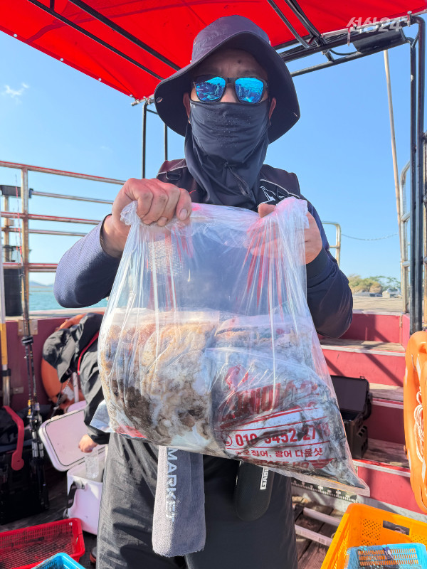
사진 5장9월20일 스페이스호 주꾸미 굿 조황입니다 여밭에 주꾸미가 대박 엄청 많이 입성을 했습니다 *** 안흥 스페이스호 예약 안내 ***예약문의 : 010-3452-2718오시는길 : 충남 태안군 근흥면 안흥1길 32홈페이지 : https://spaceho
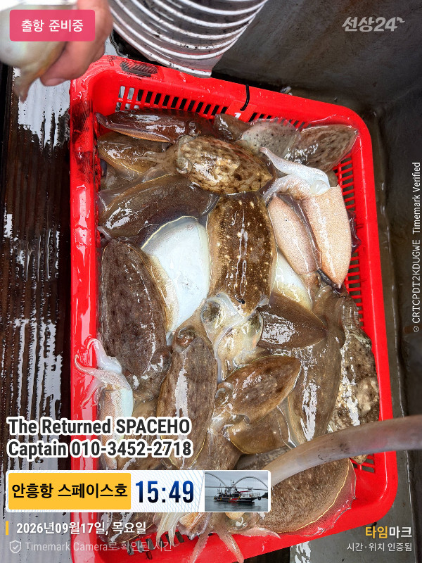
사진 15장9월17일 안흥항 스페이스호 100갑 조황 입니다 오늘 14분의 조사님을 모시고 가고 싶었던 필드로 다녀왔습니다.급 출조모집에 찾아주신 조사님들 감사드립니다.덕분에 바다에 다녀올수 있었습니다~꾸벅시즌을 늦게 오픈해서 빈자리가 많습니다.스페이스호를 찾아
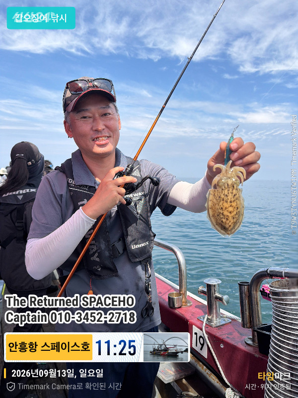
사진 11장스페이스호 9월13일 갑오징어 조황 입니다 바다가 왜 그런데요??매일 열심히 하는데 매일 매일 다른 조황을 주네요오늘은 정말로 어제 찾아주신 분들께 죄송한 조황 입니다늦은 시간에 포인트 진입 했는데 최고 90수 평균 60수로 마무리 했습니다.. 찾아주
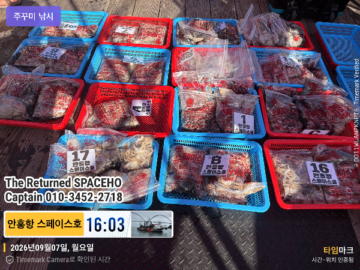
사진 2장9월7일 스페이스호 쭈꾸미낚시 조황 평균 머릿수와 사이즈가 좋아지고 있습니다 *** 안흥 스페이스호 예약 안내 ***예약문의 : 010-3452-2718오시는길 : 충남 태안군 근흥면 안흥1길 32홈페이지 : https://spaceho.sunsang
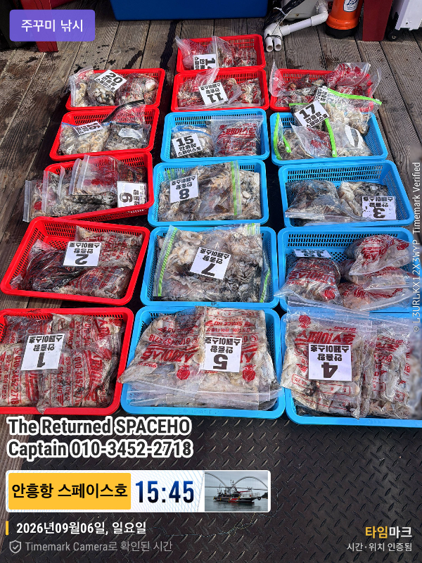
사진 2장스페이스호 9월6일 쭈꾸미낚시 조황 1등 300여수 평균200여수조황이 점점 살아나고 평균 머릿수도 좋아지고 있습니다 *** 안흥 스페이스호 예약 안내 ***예약문의 : 010-3452-2718오시는길 : 충남 태안군 근흥면 안흥1길 32홈페이지 :
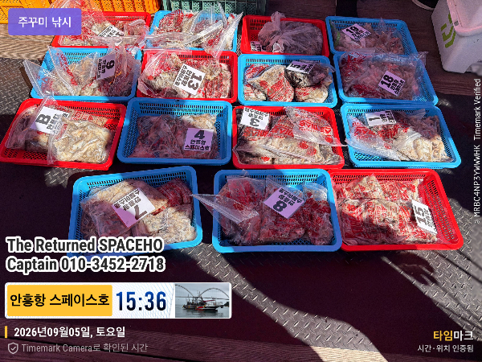
사진 2장스페이스호 9월5일 주꾸미낚시 조황 장원 312수 평균 170수점점 살아납니다*** 안흥 스페이스호 예약 안내 ***예약문의 : 010-3452-2718오시는길 : 충남 태안군 근흥면 안흥1길 32홈페이지 : https://spaceho.sunsang
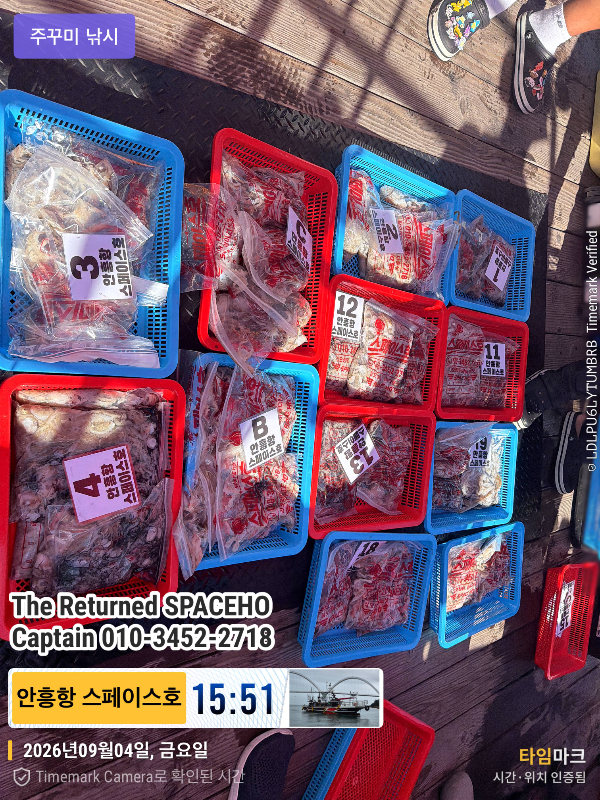
사진 4장스페이스호 9월4일 주꾸미낚시 조황 *** 안흥 스페이스호 예약 안내 ***예약문의 : 010-3452-2718오시는길 : 충남 태안군 근흥면 안흥1길 32홈페이지 : https://spaceho.sunsang24.com/ 안흥 스페이스호 (서해안/안
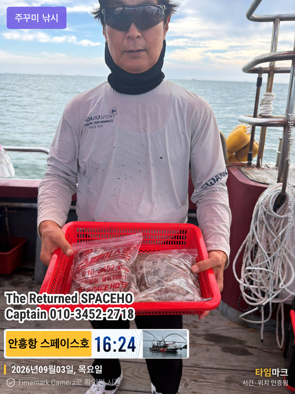
사진 5장스페이스호 9월3일 쭈꾸미낚시 조황 지퍼백 수량이 늘어나기 시작했습니다*** 안흥 스페이스호 예약 안내 ***예약문의 : 010-3452-2718오시는길 : 충남 태안군 근흥면 안흥1길 32홈페이지 : https://spaceho.sunsang24.c
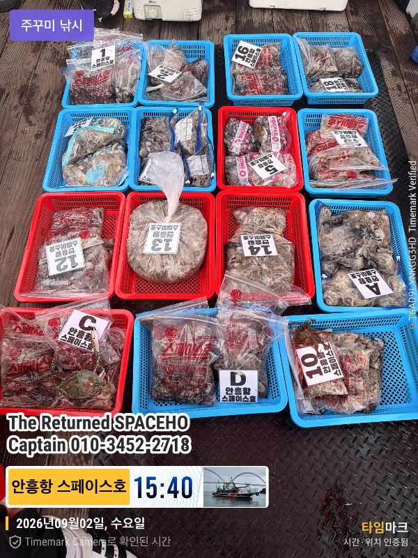
사진 5장스페이스호 9월2일 주꾸미낚시 조황 조금더 살아나는 조황*** 안흥 스페이스호 예약 안내 ***예약문의 : 010-3452-2718오시는길 : 충남 태안군 근흥면 안흥1길 32홈페이지 : https://spaceho.sunsang24.com/ 안흥 스
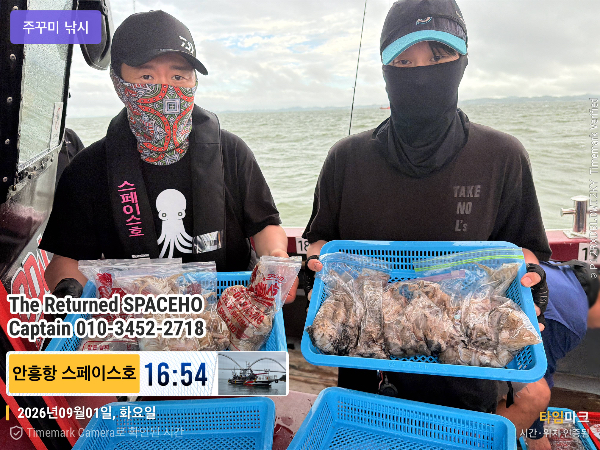
사진 5장9월1일 주꾸미 조황 입니다 9월1일 조황 입니다 *** 안흥 스페이스호 예약 안내 ***예약문의 : 010-3452-2718오시는길 : 충남 태안군 근흥면 안흥1길 32홈페이지 : https://spaceho.sunsang24.com/ 안흥 스페이스
 사진 15장
사진 15장
10/17 [군산 뚱스호]_갑오징어 종일반 조황 10/17 [군산 뚱스호]_갑오징어 종일반 조황 안녕하십니까..10월 17일 쭈꾸미종일반 조황입니다쭈꾸미조황이 별로인거 듣고평소안가던 포인트가서나오는 다잡으시게요 하고흘러보니 다행히 하나둘 나와주어잘 잡
 사진 10장
사진 10장
10/16 [군산 뚱스호]_갑오징어 종일반 조황 10/16 [군산 뚱스호]_갑오징어 종일반 조황 안녕하십니까..10월 16일 갑오징어종일반 조황입니다어제는 짧게 오는 너울오늘은 넓게오는 너울덕에종일 너울너울 했고오늘 느낌은 집나간 갑이가 돌아 온듯한느
 사진 9장
사진 9장
10/15 [군산 뚱스호]_갑오징어 종일반 조황_오늘도 고생하셨습니다 ! 10/15 [군산 뚱스호]_갑오징어 종일반 조황_오늘도 고생하셨습니다 ! 안녕하십니까..10월 15일 갑오징어종일반 조황입니다오늘은 헝그리정신으로 열심히..하루종일 너울인데 초반
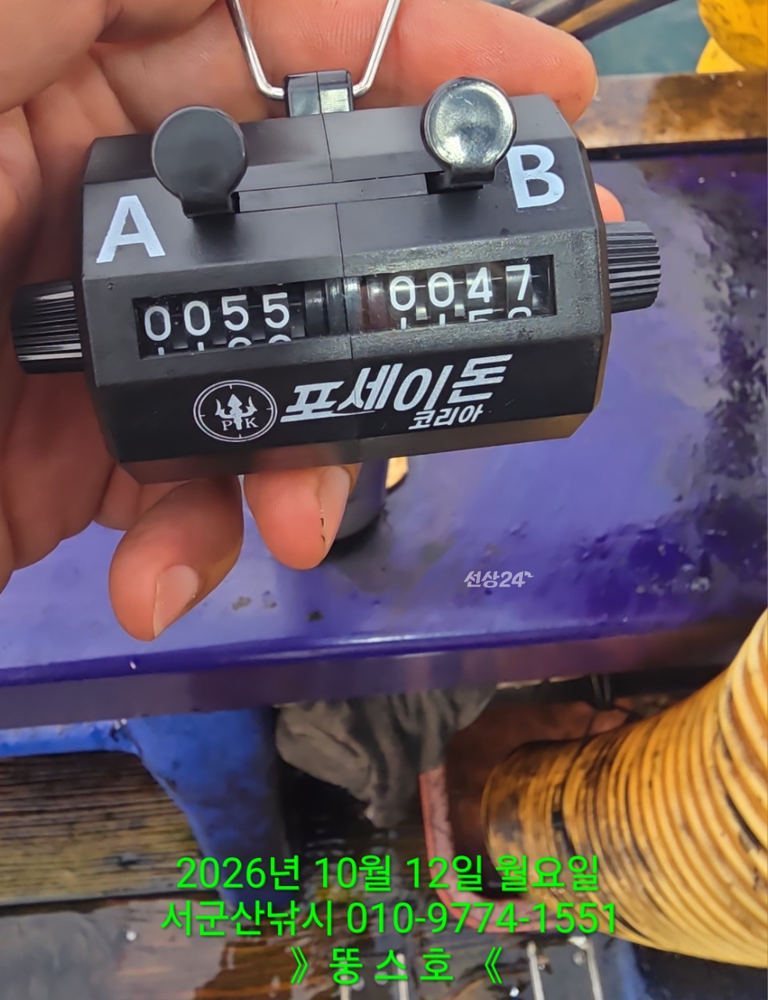
사진 6장10/12 [군산 뚱스호]_갑오징어 종일반 조황 10/12 [군산 뚱스호]_갑오징어 종일반 조황 안녕하십니까..10월 12일 갑오징어종일반 조황입니다첫포인트 에서 몇개나오는데고등어 집어되서 다른데로 이동..조용..이동..조용..그러다하나하나 나와주어
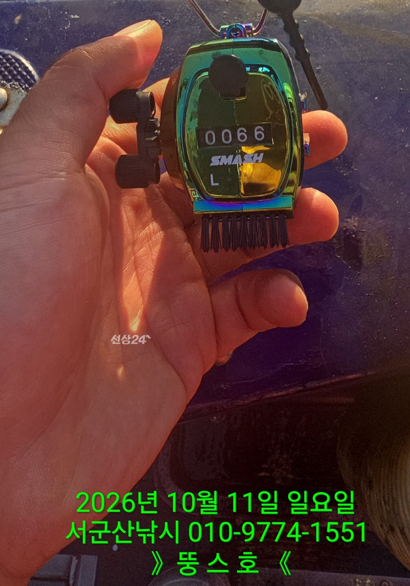
사진 6장10/11 [군산 뚱스호]_갑오징어 종일반 조황_어제보다 나은 오늘 ! 10/11 [군산 뚱스호]_갑오징어 종일반 조황_어제보다 나은 오늘 ! 안녕하십니까..10월 11일 갑오징어종일반 조황입니다어제보다는 좀더 좋은 활성도여서여기저기서 사부작사부작 잡
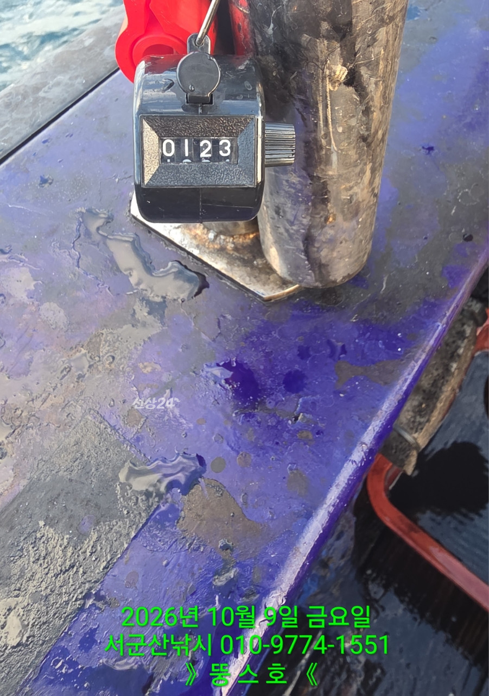
사진 11장10/9 [군산 뚱스호]_갑오징어 종일반 조황 10/9 [군산 뚱스호]_갑오징어 종일반 조황 안녕하십니까..10월 9일 갑오징어종일반 조황입니다시작은 다른배들과 같이흐르며쭈욱 잡아주고 오늘은 밥을 일찍 먹고다시 잡을려고하니 어째 영..다른데서 하나둘
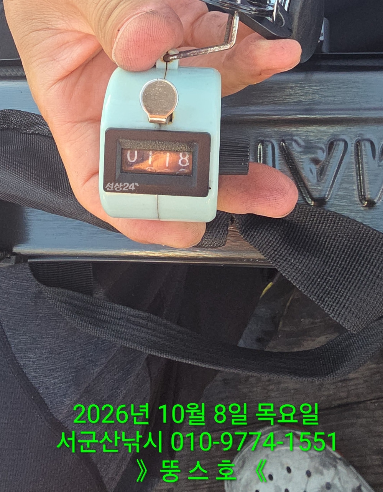
사진 8장10/8 [군산 뚱스호]_갑오징어 종일반 조황 10/8 [군산 뚱스호]_갑오징어 종일반 조황 안녕하십니까..10월 8일 갑오징어종일반 조황입니다첫포인트부터 뭐시 없다이동..이동..이동..하나하나 나오길래죽돌이 시전..입질이 끊어진다다시 이동하여 하나둘
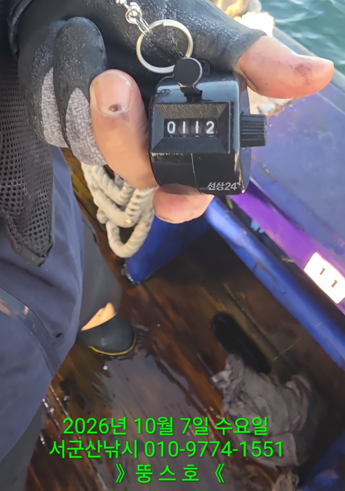
사진 9장10/7 [군산 뚱스호]_갑오징어 종일반 조황_고생많으셨습니다 ~! 10/7 [군산 뚱스호]_갑오징어 종일반 조황_고생많으셨습니다 ~! 안녕하십니까..10월 7일 갑오징어종일반 조황입니다첫포인트 너울타며 하나둘 나오는데입질 끊어져 다른데 이동..나온다
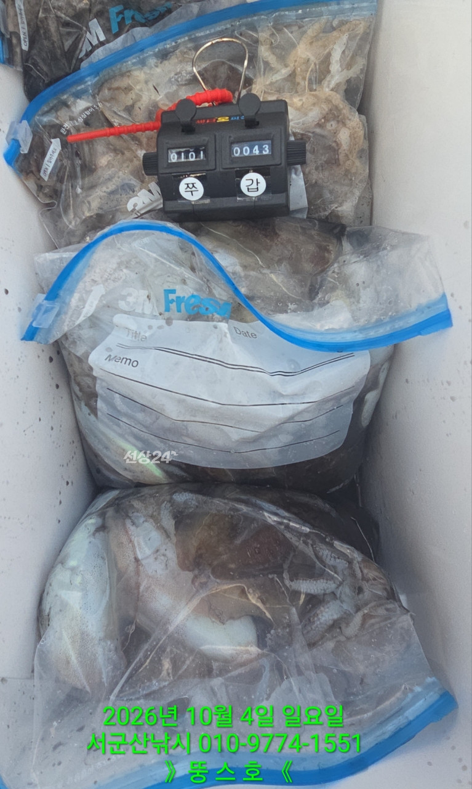
사진 4장10/4 [군산 뚱스호]_쭈꾸미 종일반 조황 10/4 [군산 뚱스호]_쭈꾸미 종일반 조황 안녕하십니까..10월 4일 쭈꾸미종일반 조황입니다오늘은 시원하게 나와주는데가없다보니 여기저기 찍어보느라유람선되었네요조과도 좋지 못하였구요그나마 나오는데서는 갑오징
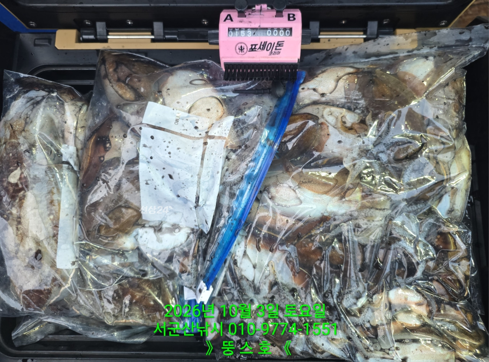
사진 9장10/3 [군산 뚱스호]_갑오징어 종일반 대박 조황 ~! 10/3 [군산 뚱스호]_갑오징어 종일반 대박 조황 ~! 안녕하십니까..10월 3일 갑오징어종일반 조황입니다오늘같은날은 다신 없을듯..어제의 여파로 너울을피해 섬으로같으나 답답하기만하여바깥으로
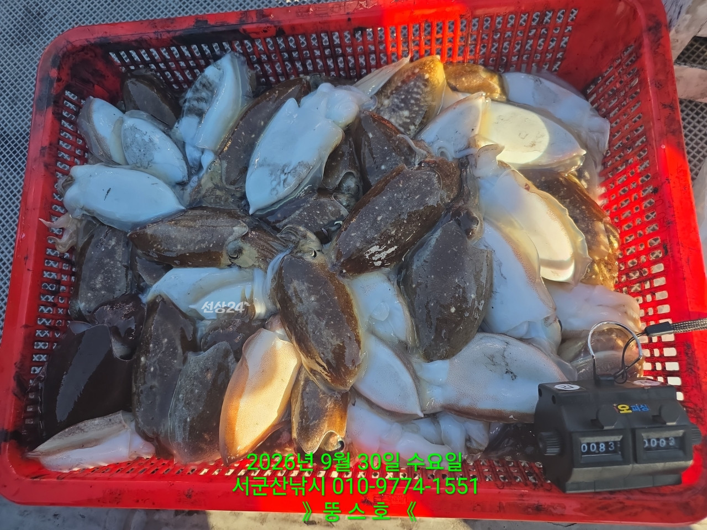
사진 4장9/30 [군산 뚱스호]_갑오징어 종일반 조황 9/30 [군산 뚱스호]_갑오징어 종일반 조황 9월 30일 갑오징어종일반 조황입니다오늘은 기상이 좋다보니마릿수는 나와주는데 사이즈가 좀..오후에는 이틀동안 성과가 없어이삭줍기도 열심히 해보았으나속물이 빠르
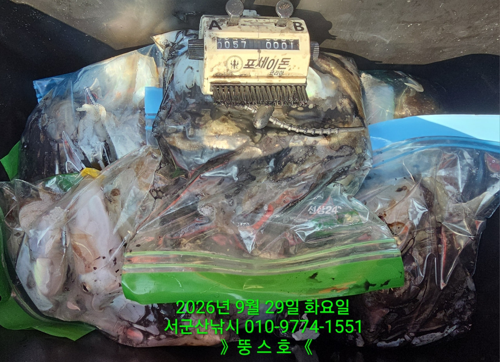
사진 4장9/29 [군산 뚱스호]_갑오징어 종일반 조황_평소보다 조금 아쉬운 하루 ! 9/29 [군산 뚱스호]_갑오징어 종일반 조황_평소보다 조금 아쉬운 하루 ! 안녕하십니까..9월 29일 갑오징어종일반 조황입니다어제랑 비슷한 상황이 예상되어다른데로 이동해 보
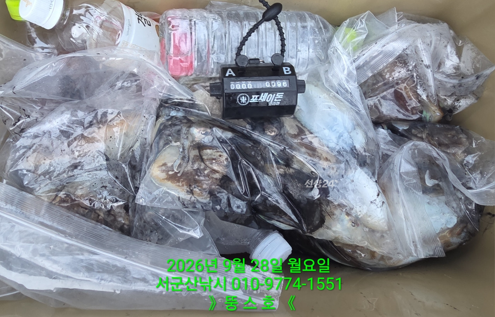
사진 4장9/28 [군산 뚱스호]_갑오징어 종일반 조황_오늘도 감사했습니다 ~! 9/28 [군산 뚱스호]_갑오징어 종일반 조황_오늘도 감사했습니다 ~! 안녕하십니까..9월 28일 갑오징어종일반 조황입니다오전에 하나둘 잡으며 재미 있게 하였는데오후에는 너무 안나
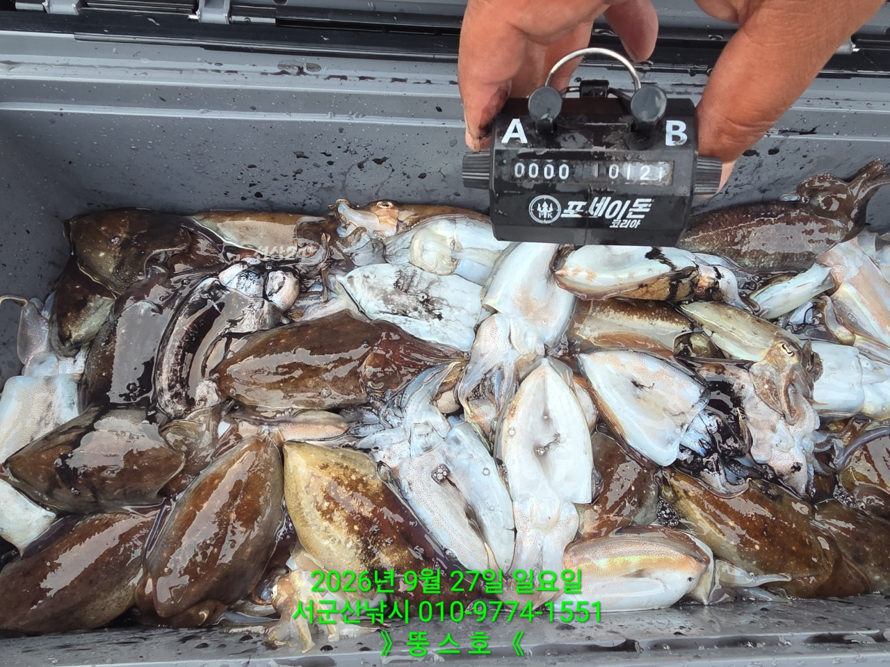
사진 6장9/27 [군산 뚱스호]_갑오징어 종일반 조황_100갑하러 오세요 ~! 9/27 [군산 뚱스호]_갑오징어 종일반 조황_100갑하러 오세요 ~! 안녕하십니까..9월 27일 갑오징어종일반 조황입니다포인트 도착해서 낚시 시작하는데적막감이 나돌아 몇군데 찍어
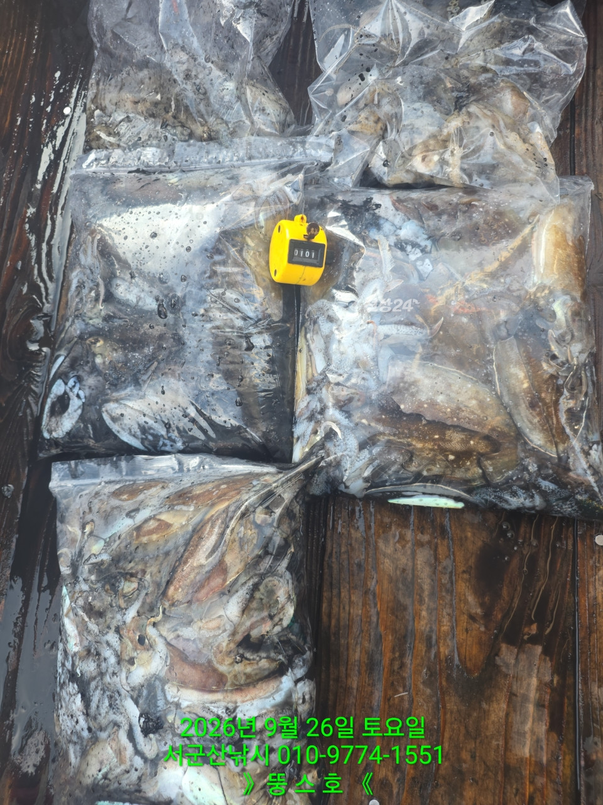
사진 4장9/26 [군산 뚱스호]_갑오징어 종일반 조황 9/26 [군산 뚱스호]_갑오징어 종일반 조황 안녕하십니까..9월 26일 갑오징어종일반 조황입니다새벽부터 오는 비 맞으며어제의 잡어였던 갑돌이 잡으러오늘의 잡어 쭈꾸미 밭으로 가서열심히 속아내면서 하나둘
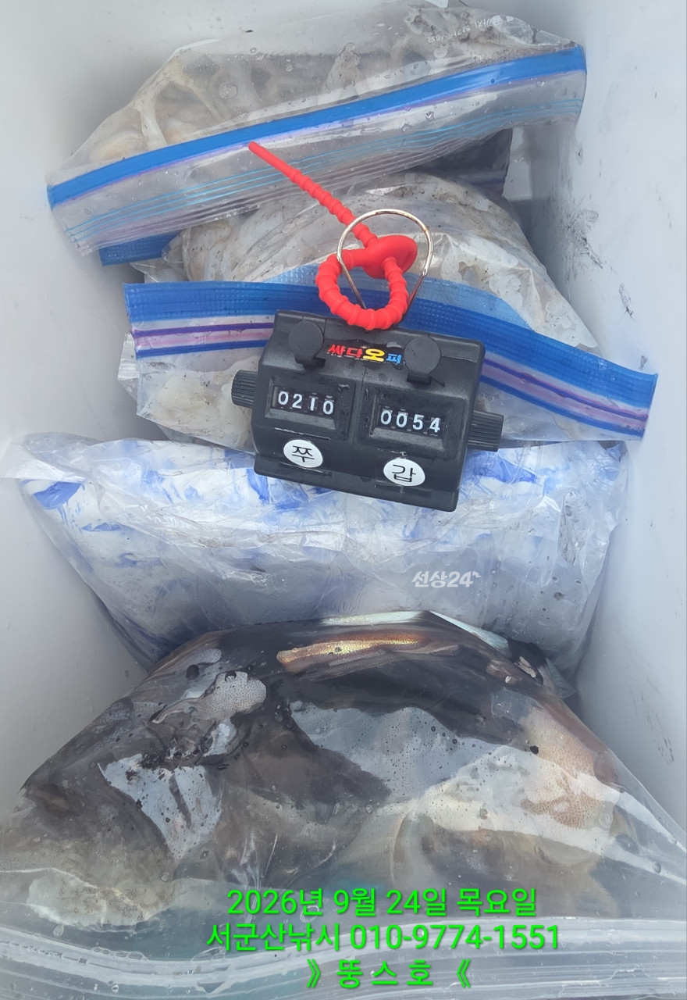
사진 6장9/24 [군산 뚱스호]_쭈꾸미 종일반 조황 9/24 [군산 뚱스호]_쭈꾸미 종일반 조황안녕하십니까..9월 24일 쭈꾸미종일반 조황입니다우와..뭐시여..잡어가 왜이리 많은겨쭈꾸미가 나오는 가운데갑이가 많이 나오다보니쭈꾸미 조과 방해를 심하게 하네요.
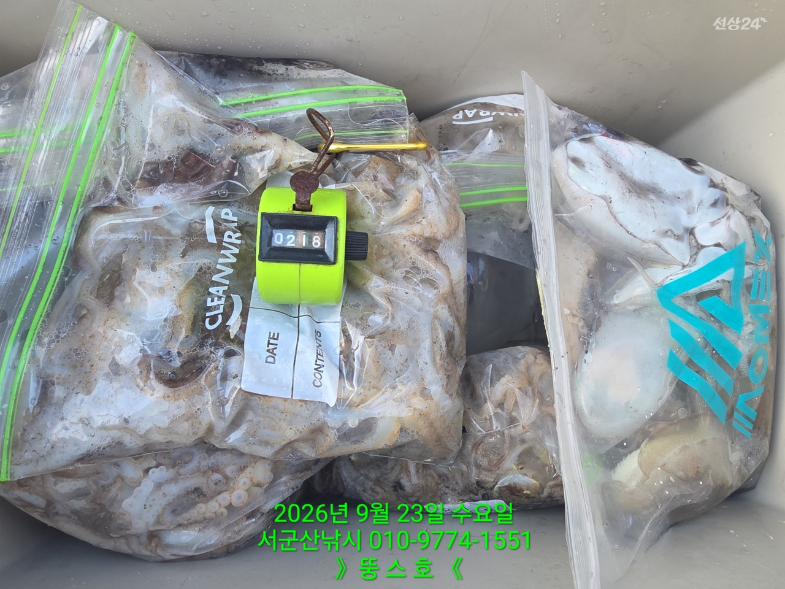
사진 7장9/23 [군산 뚱스호]_쭈꾸미 종일반 조황_멋진 조사님들 덕분에 호조황 마무리~! 9/23 [군산 뚱스호]_쭈꾸미 종일반 조황_멋진 조사님들 덕분에 호조황 마무리~! 안녕하십니까..9월 23일 쭈꾸미종일반 조황입니다첫포인트부터 하나둘 잡으면서길게좀
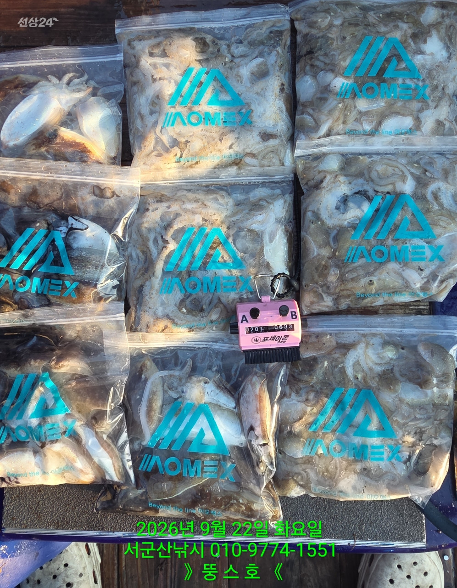
사진 4장9/22 [군산 뚱스호]_쭈꾸미 종일반 조황_오늘 고생 많으셨습니다! 9/22 [군산 뚱스호]_쭈꾸미 종일반 조황_오늘 고생 많으셨습니다! 안녕하십니까..9월 22일 쭈꾸미종일반 조황입니다오늘은 바람이 말썽이네요오전에 북동,들물..왼쪽 선진입오후에 북
 사진 7장
사진 7장
9/20 [군산 뚱스호]_쭈꾸미 종일반 조황_열낚해주신 조사님들 감사드립니다! 9/20 [군산 뚱스호]_쭈꾸미 종일반 조황_열낚해주신 조사님들 감사드립니다! 안녕하십니까..9월 20일 쭈꾸미종일반 조황입니다오늘은 조류가 돌아가셨네요어딜찍어도 물이안가
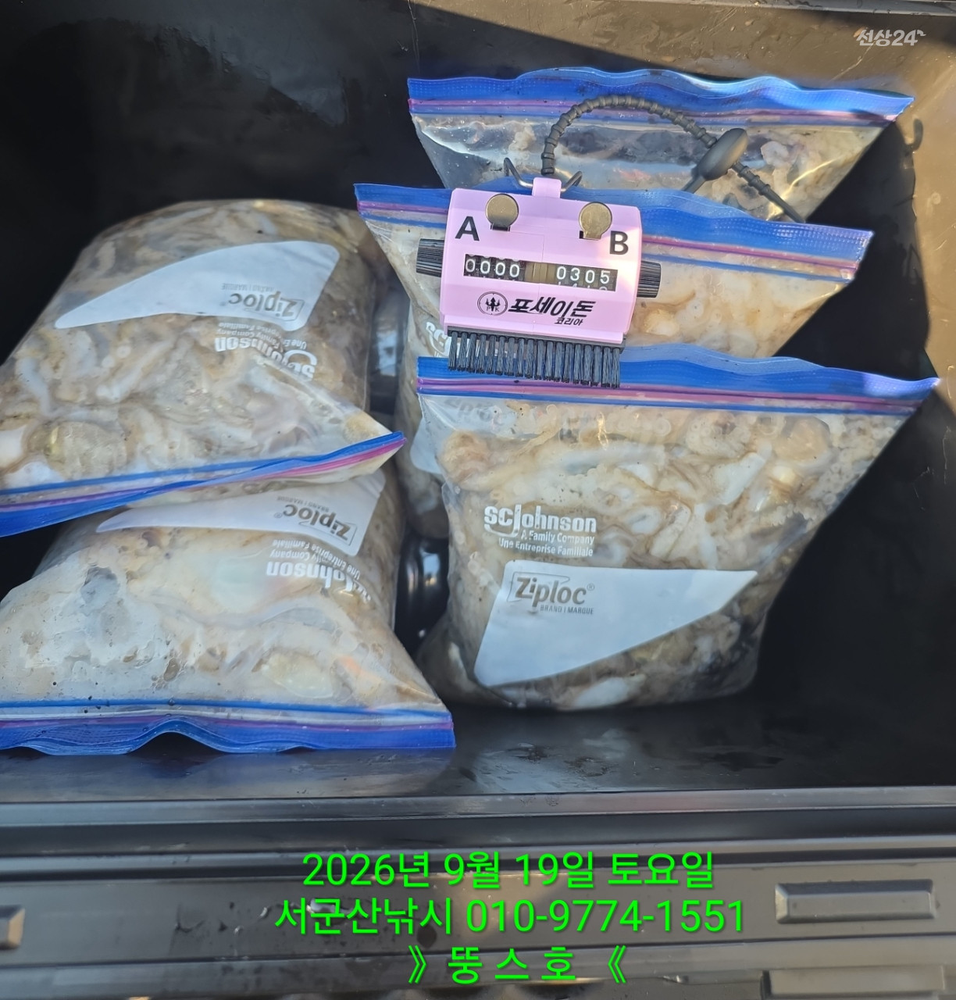
사진 7장9.19 [군산 뚱스호]_쭈꾸미 종일반 조황_장원 300수 오바~! 9.19 [군산 뚱스호]_쭈꾸미 종일반 조황_장원 300수 오바~! 안녕하십니까..9월 19일 쭈꾸미종일반 조황입니다오늘 뭔일 이래유8시전에 100수 찍으신분이 나오다니..오전에는 서
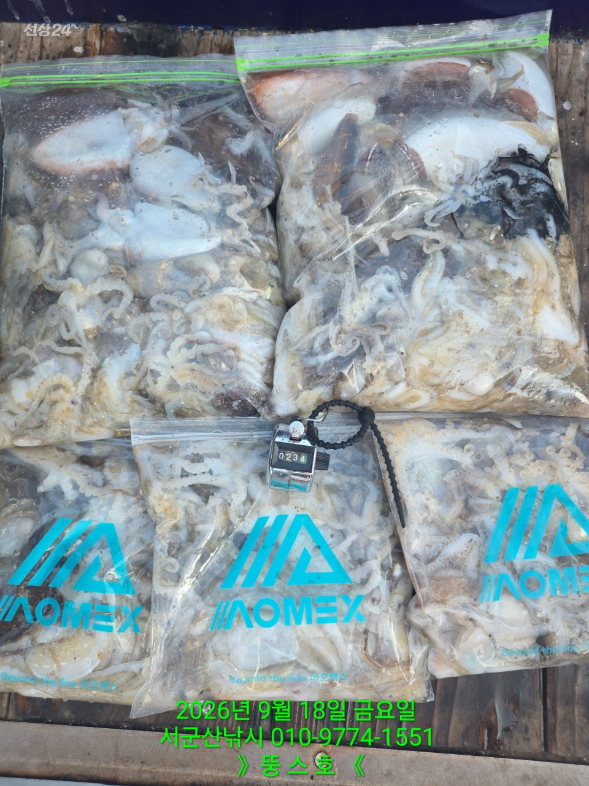
사진 3장9/18 [군산 뚱스호]_쭈꾸미 종일반 조황!_선단내 주중주말 여유자리 있습니다 ! 9/18 [군산 뚱스호]_쭈꾸미 종일반 조황!_선단내 주중주말 여유자리 있습니다 ! 안녕하십니까..9월 18일 쭈꾸미종일반 조황입니다물약하면 가는 그곳에서종일있으면서
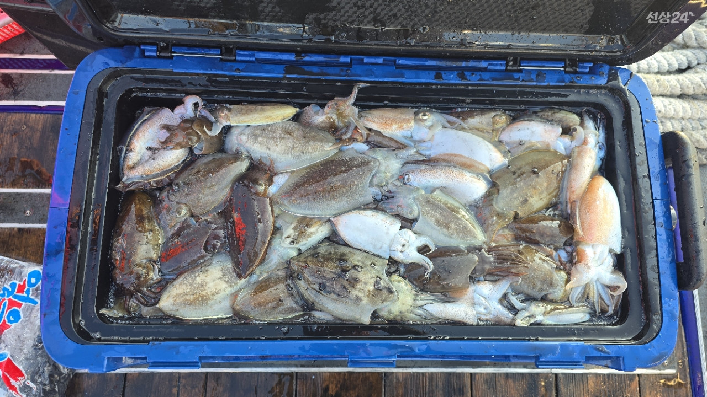
사진 4장9/16 [군산 뚱스호]_갑오징어 종일반 조황_군산에 어마어마한 갑오징어를 발견했습니다. 9/16 [군산 뚱스호]_갑오징어 종일반 조황_군산에 어마어마한 갑오징어를 발견했습니다. 9월부터 본격적으로 갑오징어 출조를 시작했고군산 먼바다에 엄청난 양의 갑
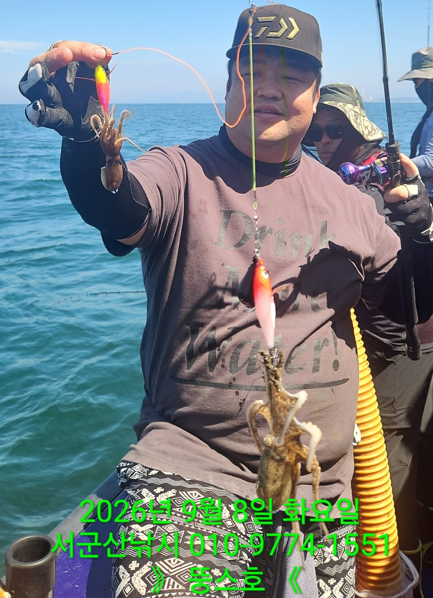
사진 7장9/8 [군산 뚱스호]_쭈꾸미 종일반 조황 9/8 [군산 뚱스호]_쭈꾸미 종일반 조황안녕하십니까..9월 8일 쭈꾸미종일반 조황입니다요기조기 찍어보다 뜬금 없는포인트에서 사이즈가 좋은것들이 나와좀잡으면서 여기저기 낚시하는데바람과 너울이 터져고생좀 했는
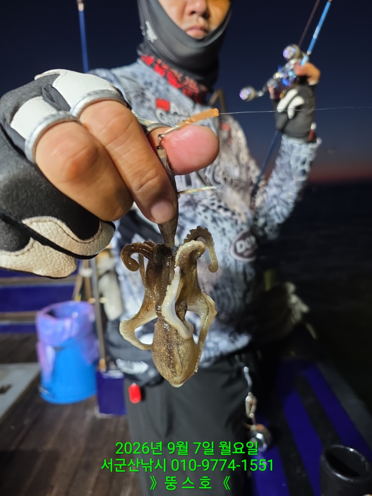
사진 6장9/7 [군산 뚱스호]_쭈꾸미 종일반 조황 9/7 [군산 뚱스호]_쭈꾸미 종일반 조황안녕하십니까..9월 7일 쭈꾸미종일반 조황입니다오늘은 새로운포인트로 이동하여사부작사부작 잡는데 물 바뀌면서 소강 상태가되어 다른데 이동하여또 사부작사부작 잡아 보았습니